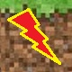

The red circle with the arrow resets the game.

|
Clicking the arrows moves Steve one space in the direction clicked. The red circle with the arrow resets the game. |
|
| Clicking the shovel removes one piece dirt from the direction the blade of the shovel is pointing. | |
| Clicking the bukkit [sic] places one piece dirt in the direction the opening of the bukkit is pointing. | |
|  | Clicking the esplode [sic] button removes one piece of dirt from each direction. Up, down, left and right. |
|
|
Clicking the free dirt button will give you 25 "extra" pieces of dirt.
|